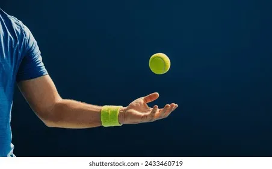
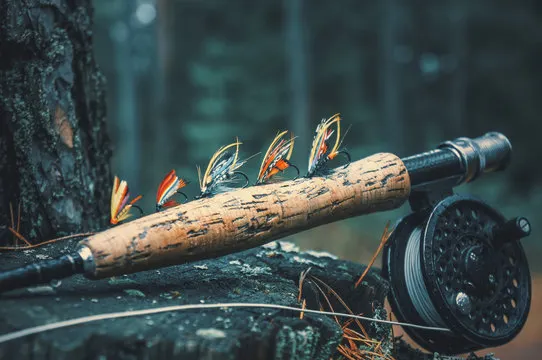

Tennis
I played Varisty Tennis all throughout high school. I have since stoppped playing it competitively, however I love to play against my friends and brother.

Amateur Radio
Amateur radio is a hobby of mine that is similar to CB radio. I was licensed through the FCC and have since been an active part of the community, even getting flown out to Curacao to operate and compete. My callsign is K6BFL

Fishing
I love everything about fishing. I am active in fly fishing, ocean fishing, and lake fishing. I often go to Texas to fish and whenever I get the chance to go fishing I take it!